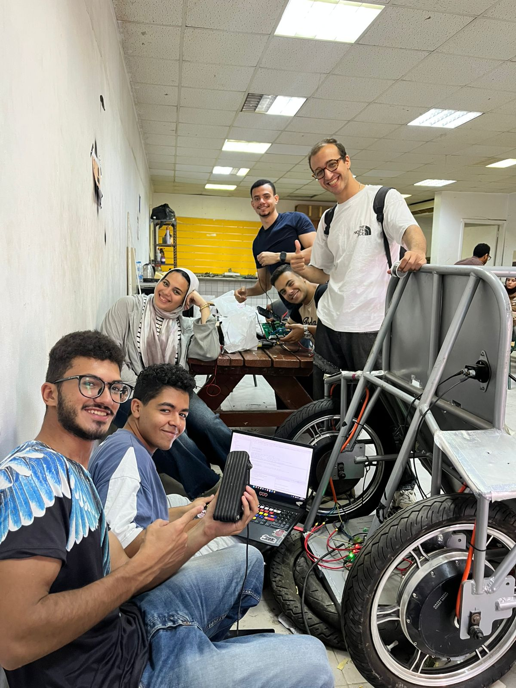
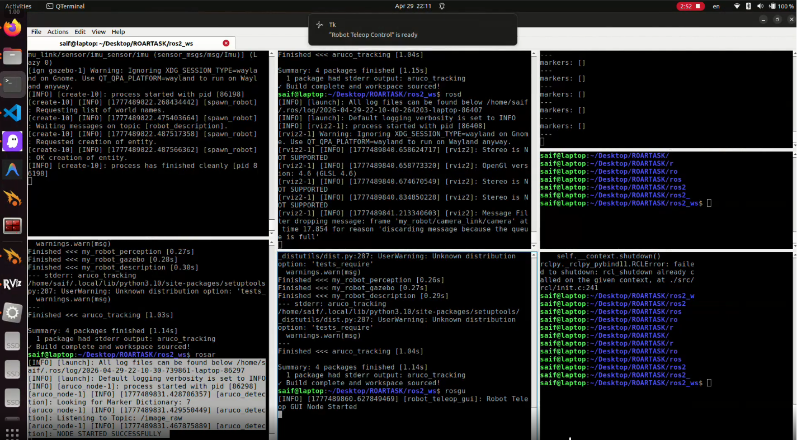
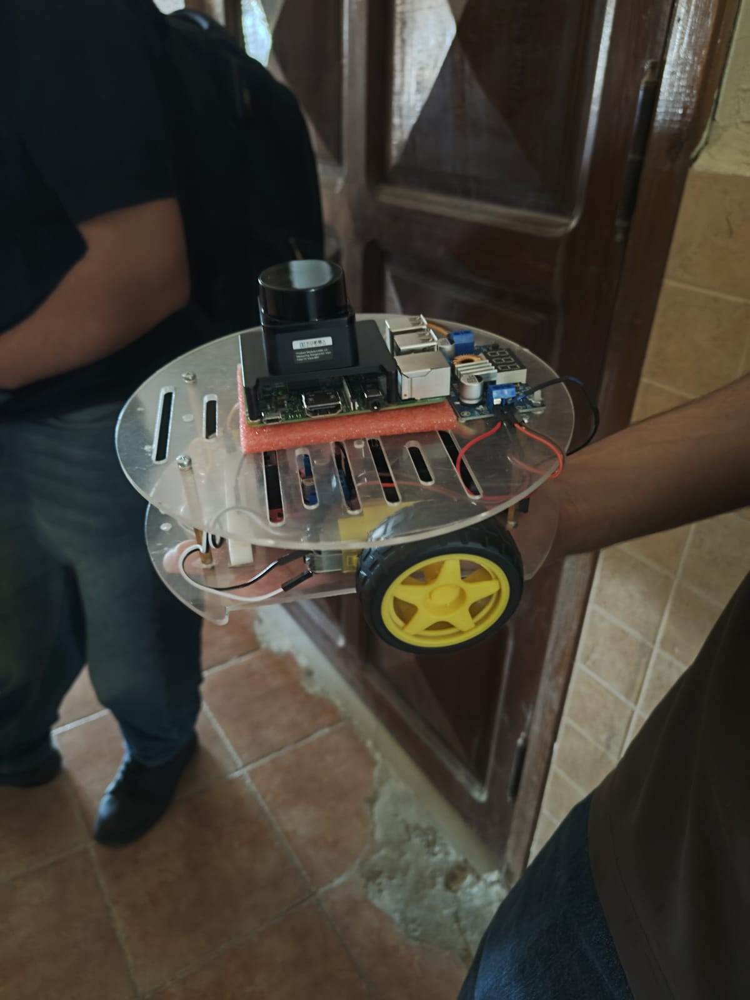
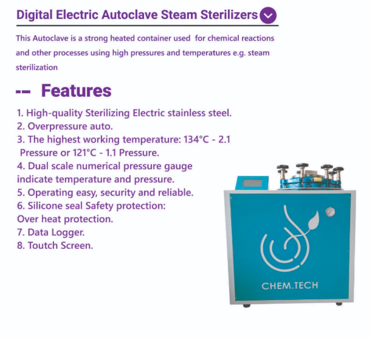

Featured Projects
A selection of embedded, hardware, and robotics work.

EV Embedded Control
Developed an EV control system from scratch for Shell Eco-Marathon using three STM32 microcontrollers. Features FOC, custom PCBs, electronic differential, and LoRaWAN telemetry.
> volume_up
> Executing
Remote PC Server
Built a TCP server in C++ to receive and execute remote PC commands, utilizing a modular architecture and SOLID principles.

Industrial & Agri PCBs
Developed over 10 custom PCBs for various industrial and agricultural products, including a refrigerator tester and a LoRa-based pump & valve management network.

Robo-Soccer RC Car
Designed and built a fast-paced remote control car heavily equipped with various active actuators specifically intended for a competitive Robo-Soccer tournament.
EV Infotainment & Lane Detection
Created a full infotainment dashboard on a Raspberry Pi 4B to monitor an EV, integrating live image processing for lane detection algorithms.
Web-Controlled RPi 4B
Directly interfaced a servo motor and LEDs using a Raspberry Pi 4B, controlled in real-time straight from a local web browser interface.

Autonomous Mars Rover
6-wheeled Mars rover simulation in ROS 2 Humble & Gazebo. Features realistic suspension, IMU, camera data processing, and active ArUco marker computer vision.

Autonomous LiDAR Car
Built a self-navigating autonomous vehicle using a Raspberry Pi 4B and a 2D LiDAR sensor to dynamically map rooms and avoid obstacles.

Autoclave Sterilizer
Engineered the main hardware and embedded control logic for a medical Autoclave Sterilizer system at ChemTech, handling extreme pressure variables.